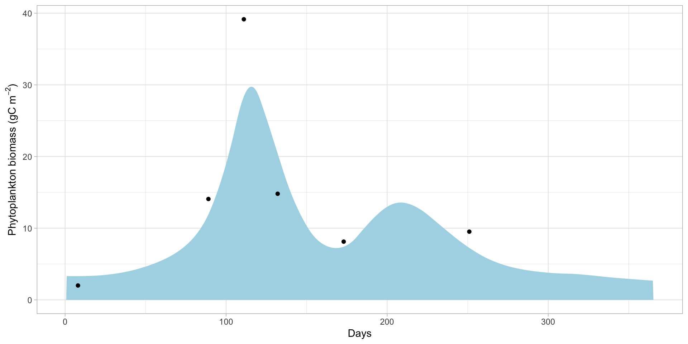
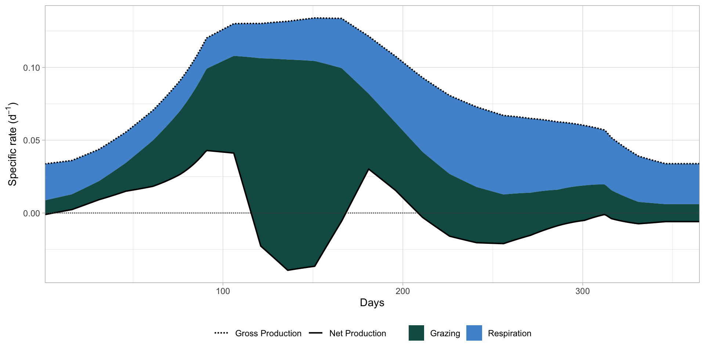
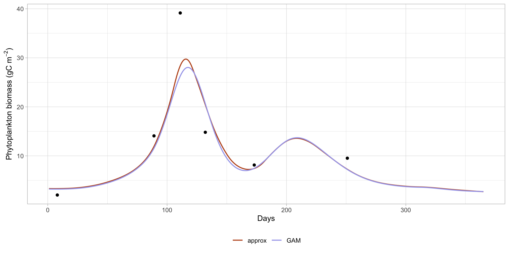
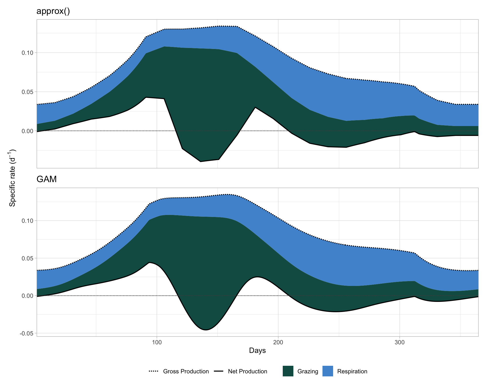
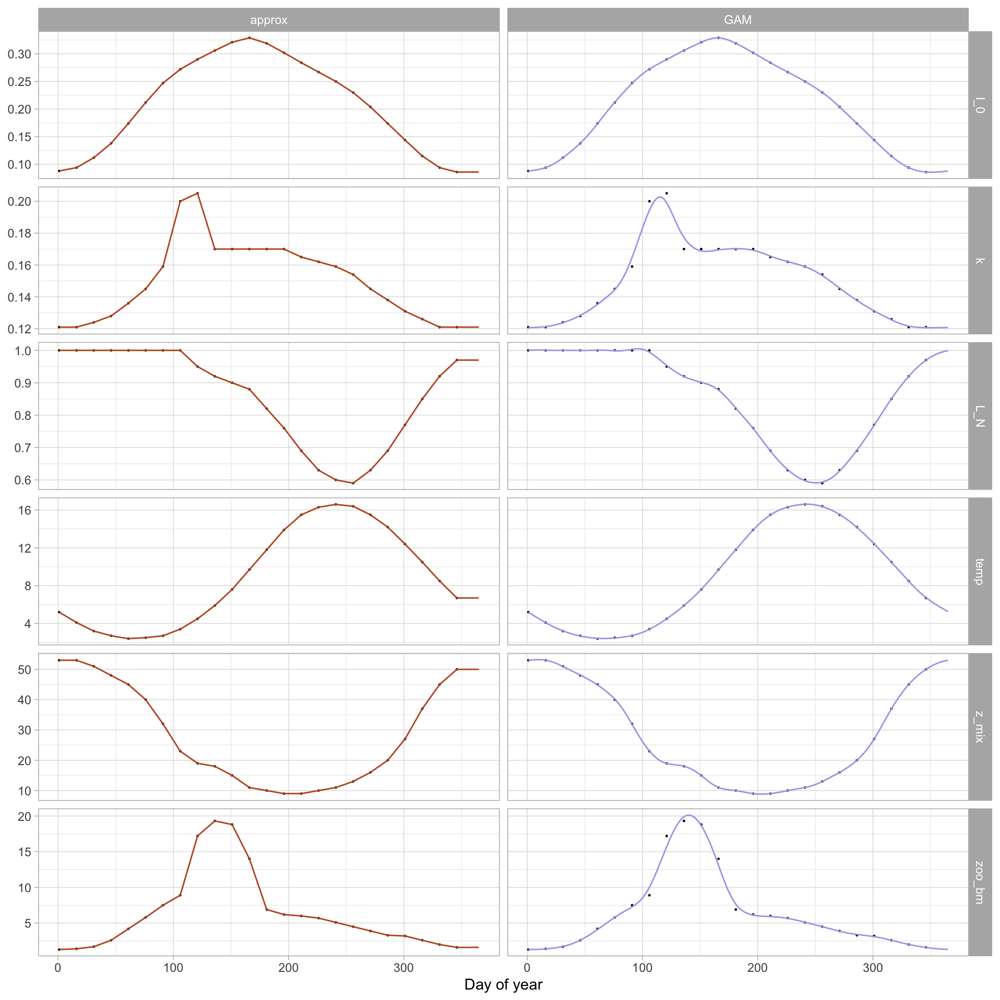
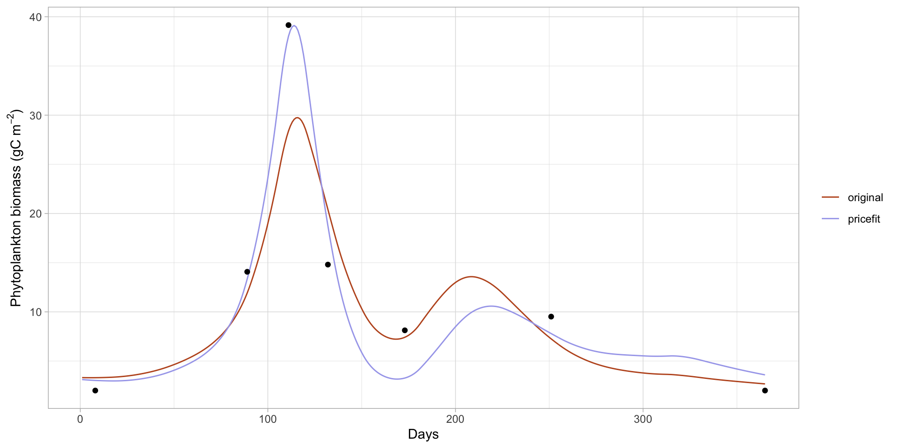
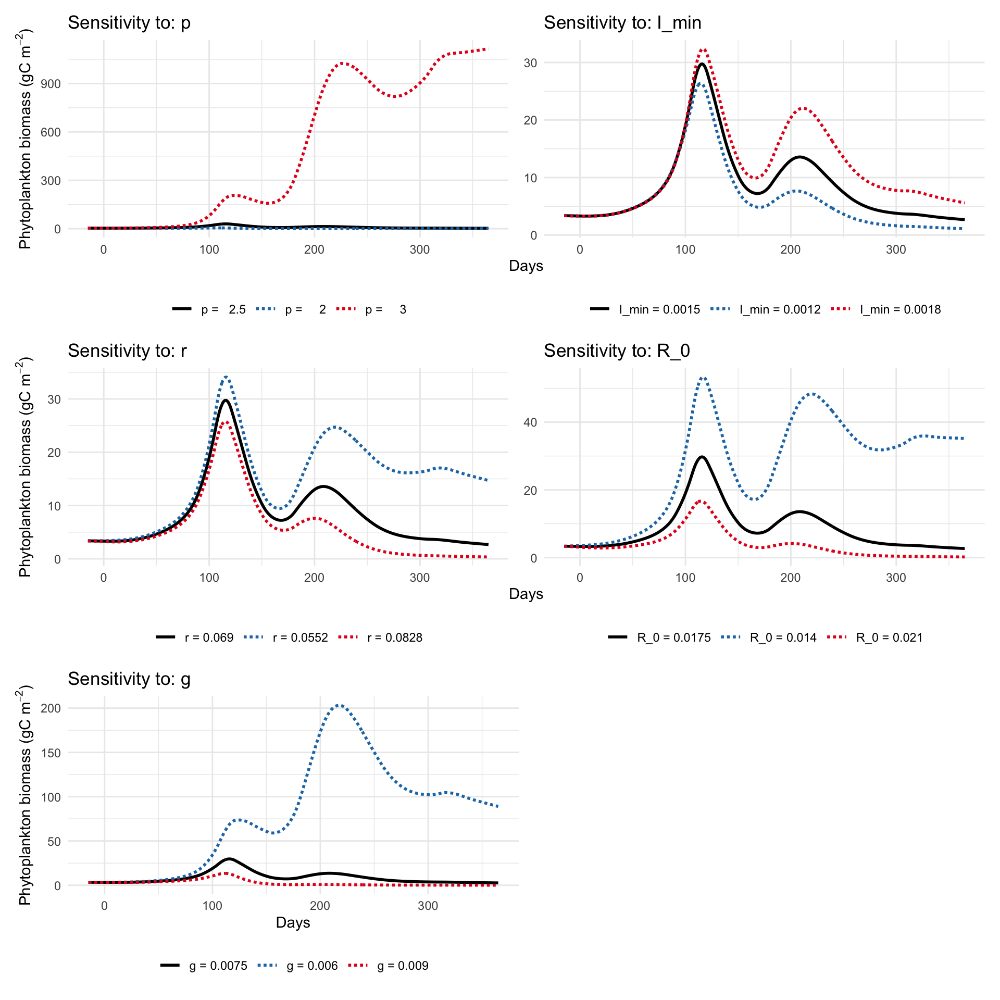
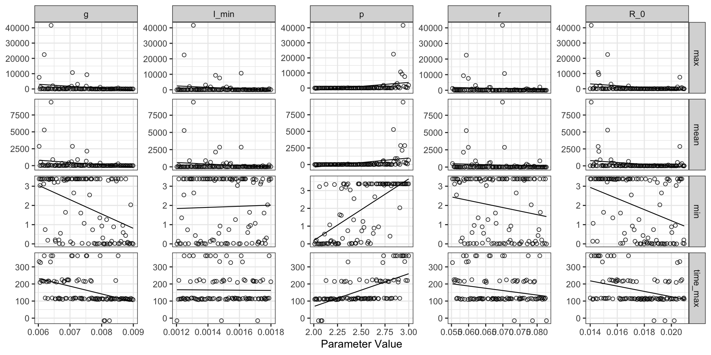
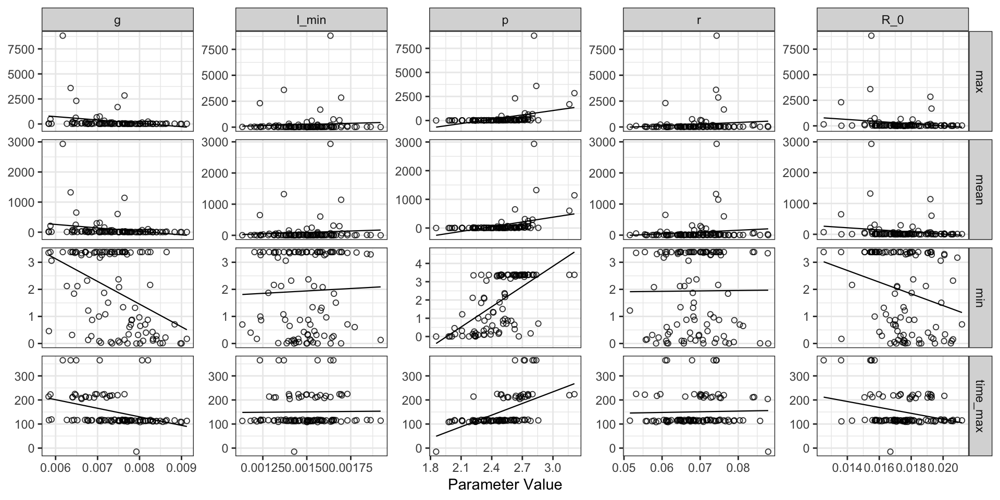

\[ \frac{\mathrm{d} P}{\mathrm{d} t } = (\overline{P_h} - R - G)~P \]
, where \(P\) is the Phytoplankton biomass, \(\overline{P_h}\) the average photosynthisis in euphotic zone, and \(G\) the grazing rate.
The biomass-specific photosynthesis rate \(\overline{P_h}\) is calculated as
\[ \overline{P_h} = \frac{\textcolor{#B3541E}{p}~\textcolor{#2B5F9E}{I_0}}{\textcolor{#2B5F9E}{k~z_\text{euph}}}~(1-\mathrm{e}^{-\textcolor{#2B5F9E}{k~z_\text{euph}}})~\textcolor{#2B5F9E}{L_\text{N}~L_\text{V}} \]
Parameters are shown in red and forcing variables in blue
Parameters:
Forcing variables:
\(\textcolor{#2B5F9E}{L_\text{V}}\) is calculated as
\[ \textcolor{#2B5F9E}{L_\text{V}} = \min(1, \frac{\textcolor{#2B5F9E}{z_\text{euph}}}{\textcolor{#2B5F9E}{z_\text{mix}}}) \] , where \(\textcolor{#2B5F9E}{z_\text{mix}}\) is the depth of the mixed layer in \(\mathrm{m}\)
\(\textcolor{#2B5F9E}{z_\text{euph}}\) is calculated as
\[ \textcolor{#2B5F9E}{z_\text{euph}} = \log(\frac{\textcolor{#2B5F9E}{I_0}}{\textcolor{#B3541E}{I_\text{min}}}) \] , where \(\textcolor{#B3541E}{I_\text{min}}\) is a parameter defining the light intensity at the base of the euphotic zone: 0.0015 \(\mathrm{g~cal~cm^{−2}~min^{−1}}\)
The biomass-specific respiration rate \(R\) is calculated as
\[ R = \textcolor{#B3541E}{R_0}~\mathrm{e}^{\textcolor{#B3541E}{r}~\textcolor{#2B5F9E}{\text{temp}}} \]
Parameters:
\(\textcolor{#B3541E}{r}\) is equal \(Q_{10} = 2\), i.e. doubling of rate for 10 °C increase in temperature: \(\mathrm{e}^{10 \text{°C}~0.069~\textrm{°C}^{-1}}\approx2\)
Forcing Variables:
The biomass-specific grazing rate \(G\) is calculated as
\[ G = \textcolor{#B3541E}{g}~\textcolor{#2B5F9E}{zoo_{\text{bm}}} \]
Parameters:
Forcing Variables:
Load packages
Load forcing and observed data
Define parameters
Define first model version. Use approx() to interpolate forcing data for each time point. For now, use rule = 2 so that for time points outside of the period in forcing data values are returned.
Define initial conditions
Time period to be integrated. Use 15 days because starting value is one time step (originally 15 days) before start of model.
approx()will use the 1st forcing data point for -15 days. See below for an alternative. Use interval of 1 day instead of 15 days.
Run the model (passing dat_forc in ...)
Plot the integrated data

Plot the rates

As seen in Figure 2, some predictions are quite ‘jaggy’. This is probably due to the linear approximations used for the forcing variables. Additionally, using the next value for timepoints outside of the range of the forcing data set (start = -15 days, end = 365 days) is not ideal.
As an alternative, use “cyclic” GAMs. Cyclic means here, that the first values are considered when fitting the last within a period of 365 days.
Although GAMs are fitted only once outside of the model function, the prediction step takes much more time than approx().
Fit a GAM for each parameter:
Update model code
Now, solve as before
Takes a while to fit, not evaluated after 1st run, but saved to output folder
Read solution_g
Plot phytoplankton biomass for both methods

approx() and GAMS
Plot the rates next to each other

Plot both interpolation methods for the forcing data

To improve fit towards end of simulation, copy first observed data point (day 8) to day 365.
This step takes some time, use the faster model with approx(). Only integrate at -15 days (initial conditions) and the timpoints in observed data. It still takes a long time to fit, so save output after first run.
Lower value explored is 0.5 * baseline parameter value and upper value 2 * baseline value.
Read output, use for new integration, and plot

Get custom function to local sensitivity analysis. For each parameter, it plots the “baseline” value, and the scenario if that baseline value is multiplied by 0.8 and 1.2 (or other values).

Get custom function to run simulations with different parameter combinations
Make data frame with parameter combinations (0.8 * baseline to 1.2 * baseline): Takes long time, save result to output

Now, use normal distribution instead of uniform. sd is 0.1 * baseline. Save results.

In Figure 7 and Figure 8, the timing is mainly in 3 days, independed on the other values, which correlate to the three blooms that seem to depend only on the forcing variables.